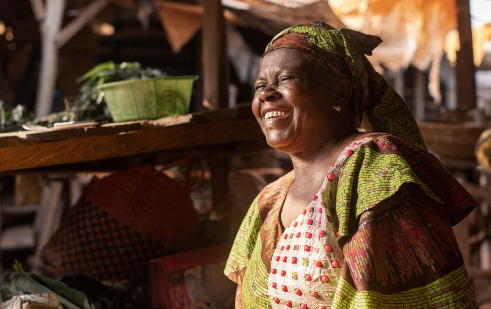

Módulo 3 | Aula 1
Atores sociais: importância da democratização do conhecimento
Conhecimento científico e outros saberes
A inclusão de diferentes atores nos processos de decisão não apenas democratiza o acesso e a disseminação do conhecimento, mas também amplia os saberes e as evidências disponíveis para a compreensão dos problemas e a construção de respostas mais adequadas à realidade local.
Quando o processo de elaboração de políticas públicas é realizado apenas a partir de uma visão técnica ou institucional, elas podem deixar de reconhecer experiências, necessidades e soluções produzidas nos territórios por comunidades, trabalhadores, usuários dos serviços e movimentos sociais.
Nesse contexto, é importante ampliar o próprio conceito de evidência. Durante muito tempo a evidência foi compreendida quase que exclusivamente como o resultado de pesquisas científicas, produzida dentro das universidades e realizadas por pesquisadores especialistas nas áreas de interesse.
Esse modelo continua, no entanto não se restringe a ele. Atualmente, as experiências tácitas de diferentes atores vêm sendo valorizadas e estimuladas nos processos decisórios. Experiências profissionais, dados produzidos no dia a dia dos serviços, vivências dos usuários, conhecimentos comunitários, saberes tradicionais e valores sociais contribuem fortemente para o avanço do conhecimento e a construção de políticas públicas com maiores chances de sucesso.
Essa proposta vem sendo apresentada a partir de um modelo moderado de evidência, no qual a pesquisa científica mantém papel relevante, mas sendo considerada em diálogo com outros fatores e não como uma verdade absoluta. “O modelo moderado deve ser capaz de abrigar e conciliar diversos tipos de evidências em diferentes áreas de política, mantendo a coerência global do modelo. Logo, deve-se ter sensibilidade a diversos tipos e usos do conhecimento, abarcando diversas áreas do saber e de políticas públicas” (Pinheiro, 2022).
Os saberes tradicionais são um exemplo importante dessa ampliação. Povos indígenas, comunidades quilombolas, ribeirinhas, agricultores familiares e outros grupos acumulam conhecimentos construídos ao longo de gerações sobre clima, território, ciclos da natureza, plantas medicinais, alimentação, manejo da água e formas coletivas de cuidado.

Fonte: Freepik (2026).
Esses conhecimentos não devem ser tratados apenas como curiosidades ou como informações a serem extraídas por pesquisadores. Eles precisam ser reconhecidos como formas legítimas de produzir compreensão sobre o mundo e como parte dos processos de decisão. No entanto, embora existam métodos para essa integração, a literatura aponta as dificuldades para o uso desses saberes no cotidiano das políticas públicas (D’Albuquerque et al., 2026).
Nessa perspectiva, democratizar o conhecimento não significa negar a ciência ou colocar todas as fontes de informação no mesmo plano sem considerar as forças das evidências, mas significa reconhecer outros saberes e levá-los em consideração nos processos decisórios.
Exemplo de pesquisa relacionada ao tema “Mudança do Clima”, que busca dar voz a diferentes atores: